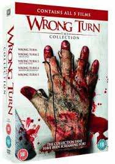

Beauty and the Beast
Beauty and the Beast is a timeless tale of love, sacrifice, and inner beauty. Belle, a bright and independent young woman, is taken prisoner by a Beast in his enchanted castle. Despite her fears, she befriends the castle’s magical staff and learns to look beyond the Beast’s hideous appearance. As their friendship deepens, Belle begins to uncover the kind heart hidden within the Beast. Their love blossoms, ultimately breaking the spell that cursed him. The story teaches that true beauty lies within, and love has the power to transform even the most unlikely souls.

The Hills Have Eyes
The Hills Have Eyes is a brutal horror film that follows a suburban family stranded in a desolate desert. Unbeknownst to them, the area is home to a group of violent, mutated cannibals born from nuclear testing. As the family fights to survive, they are hunted one by one by these inhuman predators. The movie explores themes of survival, revenge, and the primal instincts that emerge under extreme pressure. With intense violence, psychological horror, and raw suspense, it presents a terrifying vision of isolation and human vulnerability in the face of an unstoppable, bloodthirsty enemy.

Wrong Turn
Wrong Turn is a suspenseful horror film centered on a group of young adults who take a shortcut through the backwoods of West Virginia. Their path leads them into a nightmare as they encounter a family of deformed, cannibalistic mountain dwellers. With no cell service and no way back, they must use their wits and courage to survive against unimaginable terror. The film is filled with graphic scenes, eerie silence, and moments of shocking violence, building a tense atmosphere that keeps viewers on edge. It's a chilling reminder that sometimes the fastest route isn't always the safest.

The Nun
The Nun is a spine-chilling entry in The Conjuring Universe that delves into the origins of a demonic entity. Set in 1952 Romania, it follows a priest and a young novice sent by the Vatican to investigate the mysterious death of a nun at a remote abbey. As they explore the dark secrets within the monastery, they encounter the terrifying spirit Valak, disguised as a nun. The film is known for its gothic atmosphere, haunting visuals, and jump scares. It serves as a prequel to the entire Conjuring series, revealing the roots of evil in a truly terrifying tale.